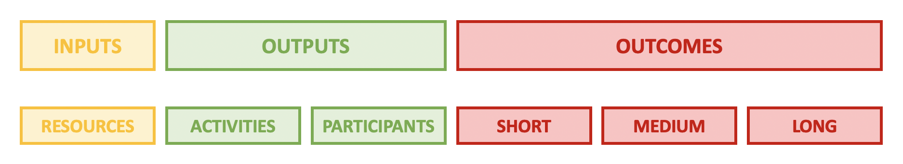
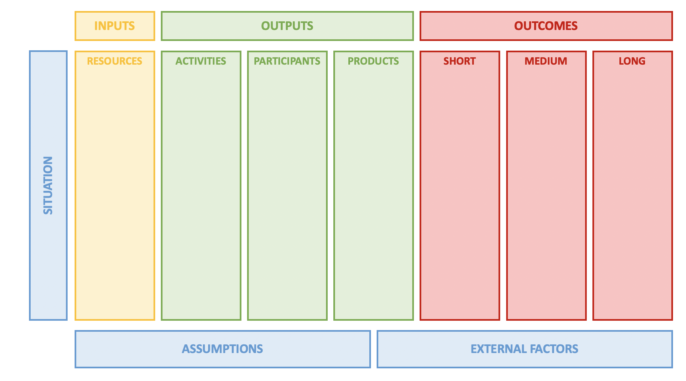

8 Session 8: Hands On: Logic Models and Synthesis Development
8.1 Synthesis Development
This is a hands-on facilitated session to guide the development of synthesis questions.
8.1.1 Resources
Pre-identified questions in Sharepoint
Synthesis Activity Description in Sharepoint
Collaborative note taking in Sharepoint
8.2 Logic Models
In this session, we will:
- Provide an overview of Logic Models
- Apply the principles of Logic Models to synthesis development
8.2.1 Logic Models
Logic models are a planning tool that are designed to support program development by depicting the flow of resources and processes leading to a desired result. They are also used for outcomes-based evaluation of a program and are often requested as part of an evaluation planning process by funders or stakeholders.
A simplified logic models comprise three main parts: Inputs, Outputs and Outcomes.
 Inputs reflect what is invested, outputs are what is done and outcomes are the results of the program.
Inputs reflect what is invested, outputs are what is done and outcomes are the results of the program.
In a more detailed logic model, outputs and outcomes are further broken down. Outputs are often represented as ‘Activities’ and ‘Participants’. By including participation (or participants), the logic model is explicitly considering the intended audience, or stakeholders, impacted by the program. Engagement of this audience is an output. In the case of outcomes, these can be split into short, medium and long-term outcomes. Sometimes this last category may be labeled ‘Impact’

Defining the inputs, outputs and outcomes early in a planning process enables teams to visualize the workflow from activity to results and can help mitigate potential challenges. Logic models can be thought of as having an ‘if this then that’ structure where inputs -> outputs -> outcomes.
In the example below we have constructed a simple logic model for a hypothetical project where training materials are being developed for a group of educators to implement at their respective institutions.
 Linkages are not always sequential and can be within categories, bi-directional and/or include feedback loops. Detailing this complexity of relationships, or theory of action, can be time consuming but is a valuable part of the thought process for project planning. In exploring all relationships, logic modeling also allows for assessing program feasibility.
Linkages are not always sequential and can be within categories, bi-directional and/or include feedback loops. Detailing this complexity of relationships, or theory of action, can be time consuming but is a valuable part of the thought process for project planning. In exploring all relationships, logic modeling also allows for assessing program feasibility.
The above graphics include two sections within Outputs - Activities and Participants - and this is quite common. There is variation in logic model templates, including versions with a third type of output - “Products’. Sometimes description of these products is contained within the Activities section - for example, ‘develop curricula’, ‘produce a report’ - however calling these out explicitly is beneficial for teams focused on product development.
Program development (and logic modeling) occurs in response to a given ‘Situation’ or need, and exploring this is the first step in modeling. The situation defines the objective, or problem, that the program is designed to solve hence some logic models may omit the left-hand situation column but be framed with Problem and Solution statements. Finally, comprehensive logic modeling takes into consideration assumptions that are made with respect to the resources available, the people involved, or the way the program will work and also recognizes that there are external factors that can impact the program’s success.

In summary:
Logic models support program development and evaluation and comprise three primary steps in the workflow:
- Inputs: Resources, contributions, and investments required for a program;
- Outputs: Activities conducted, participants reached, and products produced; and
- Outcomes: Results or expected changes arising from the program structured as short-, medium- and long-term.
8.2.2 Logic models for synthesis development
Logic models are one tool for program development and have sufficient flexibility for a variety of situations, including planning a for a research collaboration. While some logic model categories may feel less relevant (can we scale up to a long-term outcome from a published synthesis?), the process of articulating the research objective, proposed outcome, associated resources and activities has value. Below are examples of questions that a typical logic model (LM) will ask, and how these might be reframed for a research collaboration (RC).
Objective/Problem Statement
LM: What is the problem? Why is this a problem? Who does this impact?
RC: What is the current state of knowledge? What gaps exists in understanding? Why is more information / synthesis important?
Inputs
LM: What resources are needed for the program? Personnel, money, time, equipment, partnerships ..
RC: What is needed to undertake the synthesis research? For personnel, think in terms of the roles that are needed - data manager, statistician, writer, editor etc. Consider the time frame. DATA - what data are needed and what already exists?
Outputs - Activities
LM: What will be done? Development, design, workshops, conferences, counseling, outreach..
RC: What activities are needed to conduct the research? This could be high level or it could be broken down into details such as the types of statistical approaches.
Outputs - Participants
LM: Who will we reach? Clients, Participants, Customers..
RC: Who is the target audience? Who will be impacted by this work? Who is positioned to leverage this work?
Outputs - Products
LM: What will you create? Publications, websites, media communications …
RC: What research products are planned / expected? Consider this in relation to the intended audience. Is a peer-reviewed publication, report or white paper most appropriate? How will derived data be handled? Will documentation, workflows or code be published?
Short-term Outcomes
LM: What short-term outcomes are anticipated among participants. These can include changes in awareness, knowledge, skills, attitudes, opinions and intent.
RC: Will this work represent a significant contribution to current understanding?
Medium-term Outcomes
LM: What medium-term outcomes are predicted among participants? These might include changes in behaviors, decision-making and actions.
RC: Will this work promote increased research activity or open new avenues of inquiry?
Long-term Outcomes
LM: What long-term benefits, or impacts, are expected? Changes in social, economic, civic, and environmental conditions?
RC: Will this work result in local, regional or national policy change? What will be the long-term impact of increased investment in the ecosystem?
8.2.3 Resources
- Logic model template (ppt) on Sharepoint